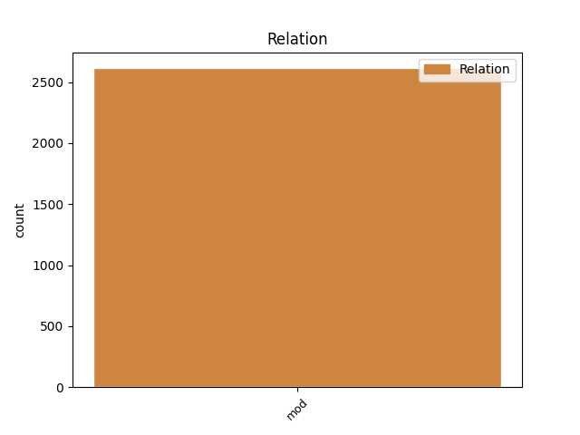
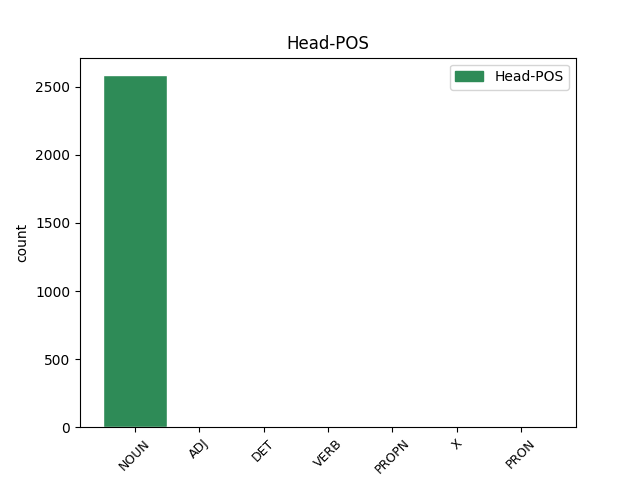
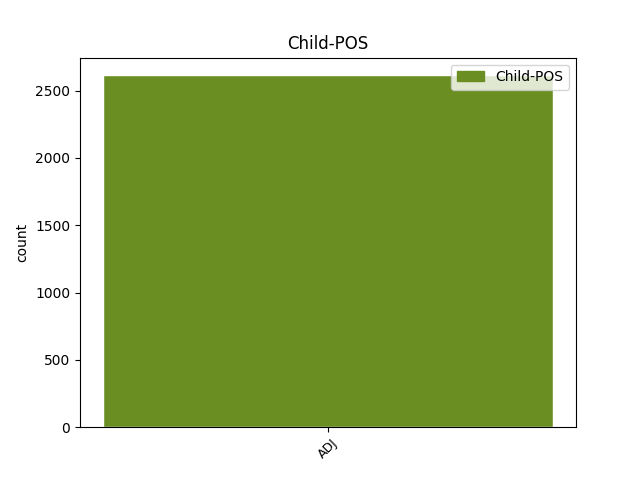

Distribution of features within this leaf



Agreement Rules sorted by frequency.
- When the dependent token is the modifer(mod) of the head token, and the dependent token is ADJ.
1 23 _ _ _ _ 0 _ _ _
2 . _ _ _ _ 0 _ _ _
3 Kalendoriniams _ _ _ _ 0 _ _ _
4 metams _ _ _ _ 0 _ _ _
5 pasibaigus _ _ _ _ 0 _ _ _
6 , _ _ _ _ 0 _ _ _
7 Komiteto _ _ _ _ 0 _ _ _
8 sekretorius _ _ _ _ 0 _ _ _
9 turimus _ _ _ _ 0 _ _ _
10 dokumentus _ _ _ _ 0 _ _ _
11 , _ _ _ _ 0 _ _ _
12 susijusius _ _ _ _ 0 _ _ _
13 su _ _ _ _ 0 _ _ _
14 Komiteto _ _ _ _ 0 _ _ _
15 posėdžiais _ _ _ _ 0 _ _ _
16 , _ _ _ _ 0 _ _ _
17 perduoda _ _ _ _ 0 _ _ _
18 saugoti _ _ _ _ 0 _ _ _
19 Aplinkos _ _ _ _ 0 _ _ _
20 ministerijai _ _ _ _ 0 _ _ _
21 , _ _ _ _ 0 _ _ _
22 kur _ _ _ _ 0 _ _ _
23 jie _ _ _ _ 0 _ _ _
24 saugomi _ _ _ _ 0 _ _ _
25 5 _ _ _ _ 0 _ _ _
26 metus _ _ _ _ 0 _ _ _
27 , _ _ _ _ 0 _ _ _
28 vadovaujantis _ _ _ _ 0 _ _ _
29 Lietuvos _ _ _ _ 0 _ _ _
30 archyvų _ _ _ _ 0 _ _ _
31 departamento _ _ _ _ 0 _ _ _
32 prie _ _ _ _ 0 _ _ _
33 Lietuvos _ _ _ _ 0 _ _ _
34 Respublikos _ _ _ _ 0 _ _ _
35 Vyriausybės _ _ _ _ 0 _ _ _
36 1997 _ _ _ _ 0 _ _ _
37 m _ _ _ _ 0 _ _ _
38 . _ _ _ _ 0 _ _ _
39 rugpjūčio _ _ _ _ 0 _ _ _
40 15 _ _ _ _ 0 _ _ _
41 d _ _ _ _ 0 _ _ _
42 . _ _ _ _ 0 _ _ _
43 įsakymu _ _ _ _ 0 _ _ _
44 Nr _ _ _ _ 0 _ _ _
45 . _ _ _ _ 0 _ _ _
46 38 _ _ _ _ 0 _ _ _
47 „ _ _ _ _ 0 _ _ _
48 Dėl _ _ _ _ 0 _ _ _
49 bendrųjų bendras ADJ bdv.nelygin.įvardž.vyr.dgs.K. Case=Gen|Definite=Def|Degree=Pos|Gender=Masc|Number=Plur 52 mod _ _
50 dokumentų _ _ _ _ 0 _ _ _
51 saugojimo _ _ _ _ 0 _ _ _
52 terminų terminas NOUN dkt.vyr.dgs.K. Case=Gen|Gender=Masc|Number=Plur 0 _ _ _
53 “ _ _ _ _ 0 _ _ _
54 ( _ _ _ _ 0 _ _ _
55 Žin _ _ _ _ 0 _ _ _
56 . _ _ _ _ 0 _ _ _
57 , _ _ _ _ 0 _ _ _
58 1997 _ _ _ _ 0 _ _ _
59 , _ _ _ _ 0 _ _ _
60 Nr _ _ _ _ 0 _ _ _
61 . _ _ _ _ 0 _ _ _
62 78-006 _ _ _ _ 0 _ _ _
63 ) _ _ _ _ 0 _ _ _
64 . _ _ _ _ 0 _ _ _
Disagree Examples:
1 Ar _ _ _ _ 0 _ _ _
2 tai _ _ _ _ 0 _ _ _
3 yra _ _ _ _ 0 _ _ _
4 humaniška humaniškas ADJ bdv.nelygin.bev. Definite=Ind|Degree=Pos|Gender=Neut 10 mod _ SpaceAfter=No
5 , _ _ _ _ 0 _ _ _
6 gerai _ _ _ _ 0 _ _ _
7 - _ _ _ _ 0 _ _ _
8 yra _ _ _ _ 0 _ _ _
9 kitas _ _ _ _ 0 _ _ _
10 klausimas klausimas NOUN dkt.vyr.vns.V. Case=Nom|Gender=Masc|Number=Sing 0 _ _ _
11 “ _ _ _ _ 0 _ _ _
12 , _ _ _ _ 0 _ _ _
13 - _ _ _ _ 0 _ _ _
14 ŠMKK _ _ _ _ 0 _ _ _
15 kalbėjo _ _ _ _ 0 _ _ _
16 G _ _ _ _ 0 _ _ _
17 . _ _ _ _ 0 _ _ _
18 Viliūnas _ _ _ _ 0 _ _ _
19 . _ _ _ _ 0 _ _ _
1 Taip _ _ _ _ 0 _ _ _
2 pat _ _ _ _ 0 _ _ _
3 gaila _ _ _ _ 0 _ _ _
4 , _ _ _ _ 0 _ _ _
5 kad _ _ _ _ 0 _ _ _
6 neatsirado _ _ _ _ 0 _ _ _
7 istorijos _ _ _ _ 0 _ _ _
8 puslapiuose _ _ _ _ 0 _ _ _
9 vietos _ _ _ _ 0 _ _ _
10 ir _ _ _ _ 0 _ _ _
11 paprastai _ _ _ _ 0 _ _ _
12 minčiai _ _ _ _ 0 _ _ _
13 - _ _ _ _ 0 _ _ _
14 1989 _ _ _ _ 0 _ _ _
15 - _ _ _ _ 0 _ _ _
16 1990 _ _ _ _ 0 _ _ _
17 m _ _ _ _ 0 _ _ _
18 . _ _ _ _ 0 _ _ _
19 Sąjūdžiui _ _ _ _ 0 _ _ _
20 Lietuvos _ _ _ _ 0 _ _ _
21 nepriklausomybė _ _ _ _ 0 _ _ _
22 buvo _ _ _ _ 0 _ _ _
23 pagrindinis _ _ _ _ 0 _ _ _
24 tikslas tikslas NOUN dkt.vyr.vns.V. Case=Nom|Gender=Masc|Number=Sing 0 _ _ _
25 , _ _ _ _ 0 _ _ _
26 dėl _ _ _ _ 0 _ _ _
27 kurio _ _ _ _ 0 _ _ _
28 negalimos negalimas ADJ bdv.nelygin.mot.dgs.V Case=Nom|Definite=Ind|Degree=Pos|Gender=Fem|Number=Plur 24 mod _ _
29 jokios _ _ _ _ 0 _ _ _
30 diskusijos _ _ _ _ 0 _ _ _
31 , _ _ _ _ 0 _ _ _
32 tuo _ _ _ _ 0 _ _ _
33 tarpu _ _ _ _ 0 _ _ _
34 LKP _ _ _ _ 0 _ _ _
35 , _ _ _ _ 0 _ _ _
36 patyrusiai _ _ _ _ 0 _ _ _
37 visišką _ _ _ _ 0 _ _ _
38 nesėkmę _ _ _ _ 0 _ _ _
39 gilėjančios _ _ _ _ 0 _ _ _
40 krizės _ _ _ _ 0 _ _ _
41 sąlygomis _ _ _ _ 0 _ _ _
42 savais _ _ _ _ 0 _ _ _
43 kanalais _ _ _ _ 0 _ _ _
44 gauti _ _ _ _ 0 _ _ _
45 ekonominį _ _ _ _ 0 _ _ _
46 savarankiškumą _ _ _ _ 0 _ _ _
47 , _ _ _ _ 0 _ _ _
48 nepriklausomybės _ _ _ _ 0 _ _ _
49 paskelbimas _ _ _ _ 0 _ _ _
50 buvo _ _ _ _ 0 _ _ _
51 tik _ _ _ _ 0 _ _ _
52 priemonė _ _ _ _ 0 _ _ _
53 deryboms _ _ _ _ 0 _ _ _
54 su _ _ _ _ 0 _ _ _
55 Maskva _ _ _ _ 0 _ _ _
56 . _ _ _ _ 0 _ _ _
1 Interviu _ _ _ _ 0 _ _ _
2 daugiausia _ _ _ _ 0 _ _ _
3 imta _ _ _ _ 0 _ _ _
4 iš _ _ _ _ 0 _ _ _
5 veikėjų _ _ _ _ 0 _ _ _
6 , _ _ _ _ 0 _ _ _
7 susijusių _ _ _ _ 0 _ _ _
8 su _ _ _ _ 0 _ _ _
9 LKP _ _ _ _ 0 _ _ _
10 , _ _ _ _ 0 _ _ _
11 arba _ _ _ _ 0 _ _ _
12 iš _ _ _ _ 0 _ _ _
13 tų _ _ _ _ 0 _ _ _
14 politikų politikas NOUN dkt.vyr.dgs.K. Case=Gen|Gender=Masc|Number=Plur 0 _ _ _
15 , _ _ _ _ 0 _ _ _
16 kuriuos _ _ _ _ 0 _ _ _
17 simpatijomis _ _ _ _ 0 _ _ _
18 V _ _ _ _ 0 _ _ _
19 . _ _ _ _ 0 _ _ _
20 Landsbergiui _ _ _ _ 0 _ _ _
21 sunku sunkus ADJ bdv.nelygin.bev. Definite=Ind|Degree=Pos|Gender=Neut 14 mod _ _
22 „ _ _ _ _ 0 _ _ _
23 apkaltinti _ _ _ _ 0 _ _ _
24 “ _ _ _ _ 0 _ _ _
25 . _ _ _ _ 0 _ _ _
1 Skundžiamasi _ _ _ _ 0 _ _ _
2 , _ _ _ _ 0 _ _ _
3 kad _ _ _ _ 0 _ _ _
4 nieko _ _ _ _ 0 _ _ _
5 negalima _ _ _ _ 0 _ _ _
6 daryti _ _ _ _ 0 _ _ _
7 , _ _ _ _ 0 _ _ _
8 kol _ _ _ _ 0 _ _ _
9 negautas _ _ _ _ 0 _ _ _
10 finansavimas _ _ _ _ 0 _ _ _
11 , _ _ _ _ 0 _ _ _
12 bet _ _ _ _ 0 _ _ _
13 iš _ _ _ _ 0 _ _ _
14 tikrųjų _ _ _ _ 0 _ _ _
15 reikia _ _ _ _ 0 _ _ _
16 klausti _ _ _ _ 0 _ _ _
17 kitaip _ _ _ _ 0 _ _ _
18 : _ _ _ _ 0 _ _ _
19 ką _ _ _ _ 0 _ _ _
20 kiekvienas _ _ _ _ 0 _ _ _
21 galime _ _ _ _ 0 _ _ _
22 padaryti _ _ _ _ 0 _ _ _
23 dėl _ _ _ _ 0 _ _ _
24 to tas DET įv.vyr.vns.K. Case=Gen|Definite=Ind|Gender=Masc|Number=Sing|PronType=Dem 0 _ _ _
25 , _ _ _ _ 0 _ _ _
26 kas _ _ _ _ 0 _ _ _
27 Vilniuje _ _ _ _ 0 _ _ _
28 brangu brangus ADJ bdv.nelygin.bev. Definite=Ind|Degree=Pos|Gender=Neut 24 mod _ SpaceAfter=No
29 ” _ _ _ _ 0 _ _ _
30 . _ _ _ _ 0 _ _ _
1 Atitinkamai _ _ _ _ 0 _ _ _
2 ji _ _ _ _ 0 _ _ _
3 turi _ _ _ _ 0 _ _ _
4 visus _ _ _ _ 0 _ _ _
5 reikalingus reikalingas ADJ bdv.nelygin.vyr.dgs.G. Case=Acc|Definite=Ind|Degree=Pos|Gender=Masc|Number=Plur 13 mod _ _
6 mokomajai _ _ _ _ 0 _ _ _
7 knygai _ _ _ _ 0 _ _ _
8 atributus _ _ _ _ 0 _ _ _
9 ( _ _ _ _ 0 _ _ _
10 atskiros _ _ _ _ 0 _ _ _
11 temos _ _ _ _ 0 _ _ _
12 plačiau _ _ _ _ 0 _ _ _
13 paaiškinamos paaiškinti VERB vksm.dlv.neveik.es.mot.dgs.V. Case=Nom|Definite=Ind|Gender=Fem|Number=Plur|Polarity=Pos|Tense=Pres|VerbForm=Part|Voice=Pass 0 _ _ _
14 specialiose _ _ _ _ 0 _ _ _
15 išnašose _ _ _ _ 0 _ _ _
16 , _ _ _ _ 0 _ _ _
17 kiekvieno _ _ _ _ 0 _ _ _
18 skyriaus _ _ _ _ 0 _ _ _
19 pabaigoje _ _ _ _ 0 _ _ _
20 yra _ _ _ _ 0 _ _ _
21 pateikiami _ _ _ _ 0 _ _ _
22 klausimai _ _ _ _ 0 _ _ _
23 ir _ _ _ _ 0 _ _ _
24 užduotys _ _ _ _ 0 _ _ _
25 pasikartojimui _ _ _ _ 0 _ _ _
26 , _ _ _ _ 0 _ _ _
27 rekomenduojamos _ _ _ _ 0 _ _ _
28 literatūros _ _ _ _ 0 _ _ _
29 sąrašas _ _ _ _ 0 _ _ _
30 ir _ _ _ _ 0 _ _ _
31 kt _ _ _ _ 0 _ _ _
32 . _ _ _ _ 0 _ _ _
33 ) _ _ _ _ 0 _ _ _
34 . _ _ _ _ 0 _ _ _